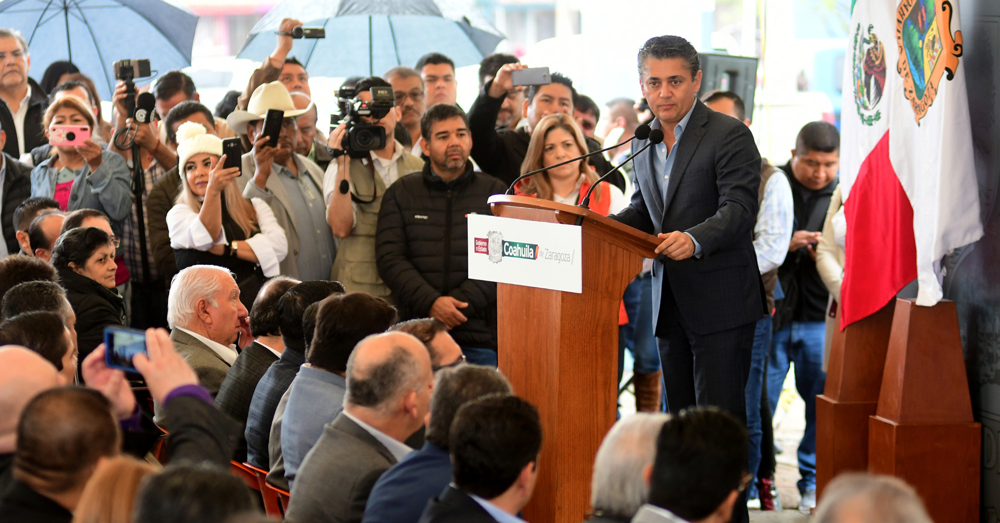
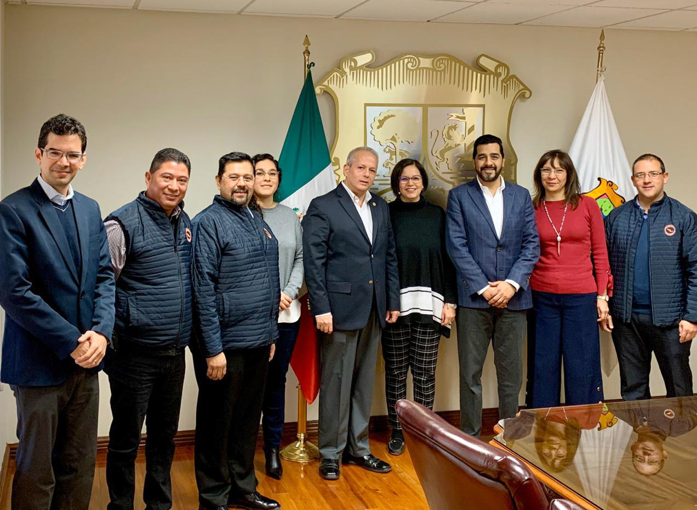
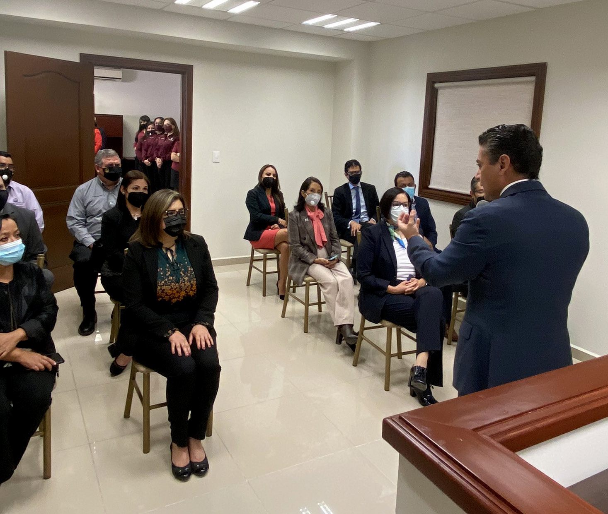
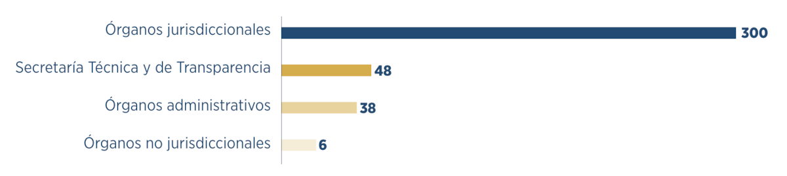

Transmisión de las Sesiones de Pleno del Tribunal Superior de Justicia
En el año 2020 continuamos con la transmisión de las sesiones del Pleno del Tribunal Superior de Justicia que iniciamos el 6 de noviembre de 2019, fecha desde la cual se han difundido en vivo —a través de nuestras redes sociales— un total de 57. Esta cantidad comprende cerca de 48 horas de transmisión.
Además, integramos la modalidad de Sesión del Pleno mediante videoconferencia, siendo la primera de estas el 15 de abril; las y los magistrados sostuvieron su plenaria de forma remota haciendo uso de la herramienta Zoom®. Posteriormente, el 20 de mayo se llevó a cabo la primera sesión de modalidad mixta, en la cual uno o más magistrados accedieron mediante videoconferencia, mientras que los demás se reunieron en la Sala de Plenos.
Transmisión de sesiones de las Salas Colegiadas
Dotamos de tecnología a las Salas Colegiadas Civil y Familiar y Penal, así como a la Sala Regional, con la finalidad de transmitir sus sesiones en nuestro sitio web y redes sociales. Las salas han hecho uso de las tres modalidades de sesión tomando en cuenta la presencia física o digital de sus integrantes: presencial, mixta y mediante videoconferencia. En este año transmitimos en vivo 78 sesiones correspondientes a estas salas, que acumulan más de 93 horas de transmisión.
Sumadas las sesiones del Pleno del Tribunal Superior de Justicia, las del Pleno en su carácter de Tribunal Constitucional y las correspondientes a las salas colegiadas, hemos difundido 135 sesiones que comprenden más de 141 horas de transmisión de las máximas instancias jurisdiccionales, disponibles en nuestro sitio web o redes sociales para su seguimiento y retransmisión.
Línea de Atención a los Usuarios por WhatsApp®
Comprometidos con la operación de un Poder Judicial abierto e innovador, iniciamos en noviembre de 2019 un servicio de atención ciudadana vía WhatsApp®, por medio del cual las personas interesadas pueden solicitar servicios o información, así como presentar denuncias o quejas en contra de servidores de este poder público.
Durante 2020 atendimos a mil 250 usuarios, que se tradujeron en 69 mil 562 mensajes interactivos que fueron turnados a las áreas correspondientes para su seguimiento puntual y eficaz, en beneficio de las y los usuarios en la entidad.

Observatorio Judicial
Durante este año continuamos con las actividades que desarrolla el Observatorio Judicial, que fue creado en 2017 como un órgano ciudadano de apoyo en la vigilancia y supervisión al interior del Poder Judicial.
Dicho Observatorio cuenta con un Capítulo Regional en Torreón, integrado por personas comprometidas pertenecientes a los sectores académico, empresarial y social de esa ciudad, quienes en 2020 emprendieron el proyecto denominado Evaluación de la Operación del Poder Judicial en el Sistema Acusatorio y Oral. Esto tiene como fin verificar el desempeño funcional del sistema dentro de este poder público, para detectar áreas de oportunidad y, en su caso, hacer propuestas de mejora.
Para estos efectos las y los integrantes del Capítulo Regional trabajaron a través de medios digitales, encuestas en línea y videoconferencias, a fin de recabar información trascendental que derivó en indicadores sobre infraestructura, equipamiento, tecnología, seguridad, limpieza, orden y desempeño al interior del Juzgado de Primera Instancia en Materia Penal del Sistema Acusatorio y Oral en aquel Distrito Judicial. Con los resultados fue posible elaborar, de manera conjunta, una serie de propuestas que en próximas fechas se entregarán al personal adscrito a ese órgano jurisdiccional.
Vinculación con la Sociedad Civil Nacional
Durante el inicio de la emergencia sanitaria implementamos en este poder público diversas prácticas, como el Buzón electrónico para Demandas y Promociones, el Sistema de Citas en Línea y la Línea de Atención a los Usuarios por Whatsapp®, entre otras, que nos permitieron mantener accesible la impartición de justicia en la entidad. Lo anterior nos ubicó como un Poder Judicial innovador, que por estas buenas prácticas fue invitado por la organización Equis Justicia para las Mujeres, así como por el Fondo Canadá para Iniciativas Locales, a participar en el proyecto denominado Fortalecimiento de la respuesta de instituciones de justicia ante el aumento de violencia contra mujeres y niñas en el contexto de COVID-19, a través de la creación de herramientas prácticas, el fortalecimiento de relaciones interinstitucionales y la transferencia de conocimientos a organizaciones de la sociedad civil.
Este proyecto tuvo como objetivo general el fomento de las órdenes de protección como un mecanismo sencillo, rápido y eficaz con el que cuentan las mujeres en situación de violencia, especialmente en el contexto de la crisis sanitaria, social y económica del COVID-19.
Lo anterior nos ha permitido, durante las distintas etapas del proyecto, tener un acercamiento con diversos actores de la sociedad civil que trabajan con mujeres que se encuentran en situación de violencia, para conocer sus experiencias y recomendaciones sobre cómo impactan estas buenas prácticas en su vida. Además de que se establecieron nuevas vías de comunicación gracias a este acercamiento, para continuar trabajando en favor de las víctimas de violencia y contar con mayores herramientas para detectar el nivel de riesgo en el que se encuentran las mujeres y niñas.

Hemos abierto las puertas para recibir a las Asociaciones, Barras, Colegios y Foros de Abogados, con el fin de entablar un diálogo respetuoso que nos lleve, primordialmente, a recibir sus sugerencias como usuarios del sistema, pero además como estudiosos del Derecho, con quienes hemos logrado convenir y realizar foros, encuentros, cursos y conferencias para el mejor proveer de la justicia.
Diálogo con Barras, Foros y Colegios de Abogados
Reconocemos en las y los profesionistas del derecho un elemento fundamental en la impartición de justicia en el estado. Son quienes, al representar a los justiciables, impulsan el desarrollo de políticas públicas de mejora judicial. Es por ello que el diálogo con Barras, Foros y Colegios de Abogados, y otras organizaciones gremiales, ha sido fundamental para la implementación del Nuevo Modelo de Justicia.
En este sentido, se llevaron a cabo 12 encuentros —tanto presenciales como virtuales— por parte del Presidente del Tribunal Superior de Justicia del Estado, así como ocho reuniones de seguimiento de acuerdos con instancias administrativas y no jurisdiccionales.
Atención a solicitudes de acceso a la información
Este poder público reafirma su compromiso con la justicia abierta, y como resultado de ello durante nueve meses consecutivos nos colocamos en el “top ten” de las entidades estatales con más solicitudes recibidas y atendidas. Este año, atendimos 392 solicitudes de acceso a la información en las que dimos respuesta a mil 350 cuestionamientos contenidos en ellas.
Gráfica 4. Solicitudes de información por órgano que dio respuesta

Fuente: Secretaría Técnica y de Transparencia de la Presidencia del Tribunal Superior de Justicia. 2020.
Información Pública de Oficio del Poder Judicial
La legislatura aplicable en materia de derecho de acceso a la información señala que las personas tienen la facultad de solicitar datos de su interés a toda institución pública, mientras que estas, como sujetos obligados, tienen el deber de difundir de manera accesible, clara y puntual dicha información —conocida como Información Pública de Oficio (IPO)— y ponerla a disposición del público en medios electrónicos de forma proactiva, sin que exista solicitud de por medio.
Las obligaciones señaladas en dichos ordenamientos son evaluadas de forma trimestral por el órgano garante en la materia, que para el caso de nuestra entidad es el Instituto Coahuilense de Acceso a la Información (ICAI), a fin de conocer el grado de cumplimiento de las mismas.
Como cada año, difundimos en formatos abiertos y accesibles la IPO en el sitio web del Poder Judicial, la cual revisamos y actualizamos continuamente para que sea susceptible de evaluación por el ICAI, quien constata el cabal cumplimiento de nuestras obligaciones. En promedio, durante los tres primeros trimestres de 2020 obtuvimos una calificación de 99.8(1) en cumplimiento de la ley local, y 99.32 en la Plataforma Nacional de Transparencia. Esto nos coloca dentro de los primeros lugares a nivel estatal en la evaluación general, por cuarto año consecutivo.
Es así como en el Poder Judicial seguimos reafirmando el compromiso de garantizar la justicia abierta, lo que nos distingue como una instancia confiable y transparente con la sociedad.
Comunicación y difusión
Durante el 2020 continuamos con la producción del programa de radio Poder Judicial al Aire, en colaboración con Coahuila Radio y Televisión, el cual desde junio es transmitido de manera adicional por nuestras redes sociales oficiales. Esta emisión es posible gracias a la participación del personal de los órganos que integran este poder, que aborda temas de interés público para promover una sociedad informada y participativa en el quehacer judicial.
Algunos de los temas que este año difundimos son: el inicio del proceso penal, las soluciones alternas en un procedimiento penal, los retos de la administración de justicia, el juicio sucesorio intestamentario, los derechos alimentarios, el testamento, violencia familiar, los medios alternos de solución de controversias, la usucapión, el uso de herramientas tecnológicas en el Poder Judicial, la acción penal por particulares, el uso de tecnologías en el Sistema de Justicia Penal, la impartición de justicia para adolescentes, el sistema de gestión aplicado al Poder Judicial, la función del Archivo Judicial, la capacitación en el nuevo Sistema de Justicia Laboral, el patrimonio familiar, el pagaré, la usura, las herramientas digitales e innovación en el Poder Judicial, el divorcio, la conmemoración del Día Internacional para la Eliminación de la Violencia contra la Mujer y la transparencia, entre otros.
Aunado a esto, realizamos dos programas distintos bajo diferentes formatos: Justicia y Justiciables y Diálogos desde la Justicia, donde juezas y jueces y magistradas y magistrados expusieron de manera breve y clara temas de relevancia; entre nuestros invitados contamos con la presencia de la Magistrada María del Carmen Galván Tello, la Magistrada María Eugenia Galindo Hernández, el Magistrado Iván Garza García y el Magistrado César Alejandro Saucedo Flores, además del Magistrado Juan José Yáñez Arreola, el Magistrado José Ignacio Máynez Varela y el Magistrado Vladimir Kaiceros Barranco.
A través de la Coordinación de Comunicación Social del Instituto Estatal de Defensoría Pública, informamos a la población sobre las acciones y los servicios de defensoría pública y asesoría jurídica que ofrecemos. Para ello utilizamos las redes sociales como Facebook® y Twitter®, además de los medios de comunicación convencionales como radio y televisión, que año con año nos conceden un espacio entre sus programaciones.
Este año publicamos en redes sociales mil 584 comunicados, fotografías e infografías con temas de interés para la ciudadanía y la cobertura diaria de nuestras actividades. Y como resultado de la interacción en estas plataformas, canalizamos a los ciudadanos al área que corresponde cuando así lo solicitan o requieren.
Asimismo, con el apoyo de emisoras de radio y televisión nos acercamos a la población. En colaboración con Radio Universidad transmitimos el programa Defensoría Contigo, el cual a partir de agosto se difunde por la plataforma Skype® y se enlaza a estaciones de radio en Torreón; en la empresa RCG acudimos a diversos programas de radio y televisión; en Televisión Azteca Noreste divulgamos las cápsulas informativas Escritorio Público; y desde marzo participamos en el programa Radio Estatal Online, del cual a la fecha realizamos 85 emisiones.
Actualmente las distintas redes sociales del Poder Judicial del Estado cuentan con más de 23 mil seguidores y a través de ellas difundimos nuestras actividades, acciones relevantes, eventos y comunicados a la sociedad.
Promoción y difusión de los medios alternos de solución de controversias
Según lo dispuesto por la Ley de Medios Alternos de Solución de Controversias del Estado de Coahuila de Zaragoza, tenemos encomendada la tarea de difundir de manera continua las vías no litigiosas para la resolución de conflictos y, a su vez, el deber de propiciar el intercambio permanente de conocimientos y experiencias con instituciones públicas y privadas.
Con el objetivo de sensibilizar a niñas, niños, adolescentes, padres de familia y docentes sobre la importancia de que integren en su vida cotidiana formas dialogadas de abordar un conflicto, como las que se encuentran en la mediación y en otras formas alternas de resolución de controversias, impartimos durante el periodo que se informa pláticas de sensibilización a seis mil 986 personas, principalmente de instituciones públicas y mediante videoconferencia.
Referencias
- El Top ten es un análisis que realiza de manera mensual el Instituto Coahuilense de Acceso a la Información Pública a través de la Dirección de Cumplimiento y Responsabilidades para formular una estadística que permita medir el total de solicitudes recibidas de manera mensual y anual.